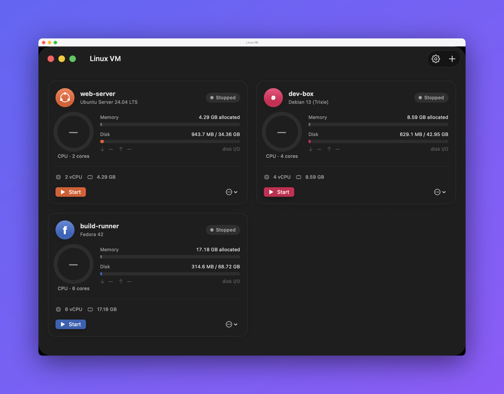

Isolated Linux VMs on Apple Silicon that install and configure themselves — no installer, no steps.

⬇︎ Download for macOS · .dmgLinuxVM isn't signed with an Apple Developer ID, so macOS blocks it the first time you open it. This is expected — do one of these once and it opens normally afterward.
LinuxVM, choose Open, then click
Open again in the dialog.LinuxVM being blocked, and click Open Anyway.
Confirm with Open Anyway (and Touch ID or your password if asked)./usr/bin/xattr -dr com.apple.quarantine /Applications/LinuxVM.app